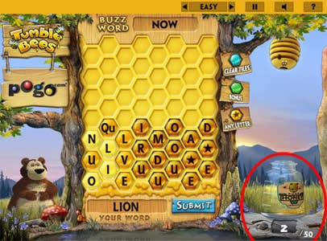

| Gameplay |
 |
||
Your goal is to fill the honey jar. Longer words are worth more! You also get extra honey for two things:
These special events earn you more progress by helping fill up the honey jar faster. If you make enough honey to fill the honey jar, you get to play the bonus round. You win by spelling three 5-letter words (or longer) in the bonus round. You can earn bigger rewards by playing at harder skill levels, but you will also find the game more challenging.
|